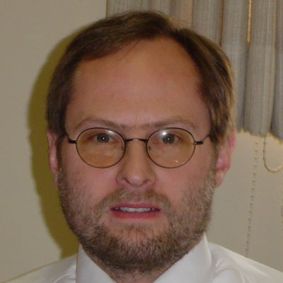

|  | Andrew Newman
Yale University |
|
Bio: Andrew has spent the last 20 years at Yale University working on campus-wide infrastructure initiatives. He has been active in the design and deployment of Yale's high-speed network as well as the establishment of policies, services and best practices aimed at network stability and ease of management. Andrew's interests include the design of scalable authentication mechanisms and the management of long-term institutional credentials. Additional areas of expertise include the design of flexible security models in a multi-tier software environment and the analysis of security practices for adherence to stated standards. While at Yale, Andrew has been responsible for designing (and initially supporting) the first campus-wide NetID subsystem whereby all community members could authenticate to campus resources with a single durable identifier. In parallel with this effort was the establishment of Kerberos as the campus standard intra-university authentication framework. In his current role as Director of Technology & Planning, Andrew leads a small focused group of senior technologists who help set university standards for a significant portion of the campus Information Technology infrastructure. Included in this effort is the design and deployment of the Central Authentication Server (CAS) that allows safe distributed web-based authentication by members of the campus community. Other group initiatives include the roll-out of Yale's first student-oriented campus portal based upon the open source JA-SIG uPortal software. Under Andrew's leadership, Technology & Planning at Yale has managed the bulk of the technical issues associated with our recent roll out of the Sakai LMS system as an eventual replacement for our existing locally written product. Additionally the product formally known as Yale CAS (now JA-SIG CAS) has been converted to a true community source effort. Platform:
In the twenty or so years I have worked in the field of Information Technology at Yale I have had the privilege to participate both technically and managerially in many large software development projects. These have included work paid for by public and private granting agencies as well as community efforts involving multiple schools and the attendant coordination of occasionally divergent priorities. Today I believe the efforts of the Sakai Foundation represent an emerging model that will redefine the way colleges and universities evaluate, fund and ultimately benefit from technology. I feel that the Sakai Foundation Board of Directors must attend to several pressing issues in order to maximally serve our identified constituency as well as the granting agencies that help fund this endeavor. 1. There must be a balance between the continuing technical excellence of the software product and the ongoing ability of the Sakai community to meaningfully influence the direction and priorities of the developers. This may be obvious but it doesn't mean it's easy. Good software developers tend to want to build compelling frameworks with the expectation that it will pave the way for easier development by those that follow. The unstated expectation is often that those who follow will need less vision, experience or skill as a result of today's efforts on a cogent framework. Today's Sakai product has an excellent framework that I genuinely believe is getting better with every release. Even so, when I'm asked about the product by IT folks at other schools, they are primarily interested in the different tools that are available. As I describe these, they are making a mental comparison to their locally written CMS/LMS or, perhaps their currently chosen commercial product. When and if they decide to use Sakai, their decision will have a great deal to do with the tools and somewhat less to do with the compelling framework. 2. Possible partnerships with other community source efforts in the broad field of education should be sought out and formalized with some vigor. There should be a good story to tell about how Sakai works with JSR-168 based portal frameworks but there should be a *great* story to tell about how Sakai works with the JA-SIG uPortal or with the NSF Middleware Initiative's Shibboleth project. 3. Adopting a community source product should have very little to do with social, political or spiritual principles and more to do with good long term business strategy. Small to medium-sized schools need to see Sakai as the best bet when it comes to value versus cost. Two concrete things can be done to help here. Sakai talks and presentations (both technical and non technical) should be available at broad-topic conferences such as Educause and targeted specifically at schools with fewer IT resources and traditionally conservative software purchasing patterns. Often smaller schools leave decisions such as this to academic deans and library administrators. The presentations should be friendly to this non-technical audience. Sakai should expand it's efforts to find, promote and ultimately even certify third party consultative groups who wish to offer technical support and integration services to schools that may need this. There should be a very compelling story available to schools that worry about depending on a product without a support contract. 4. The Sakai Foundation must have a long term plan to maintain a sufficiently diversified set of revenue sources to assure that we can continue to fund the critical R&D and development work that is the lifeblood of the product while also assuring that a compelling and comforting message is delivered to our present and future community. | |